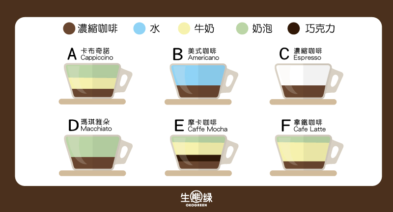
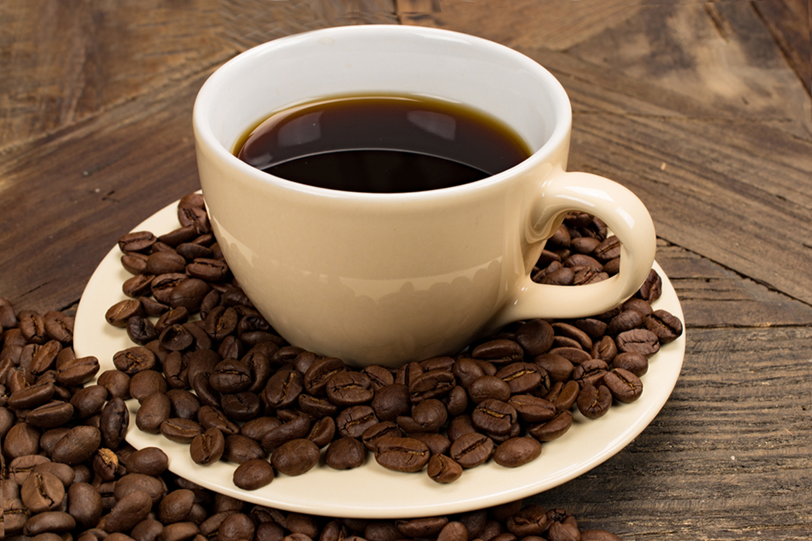
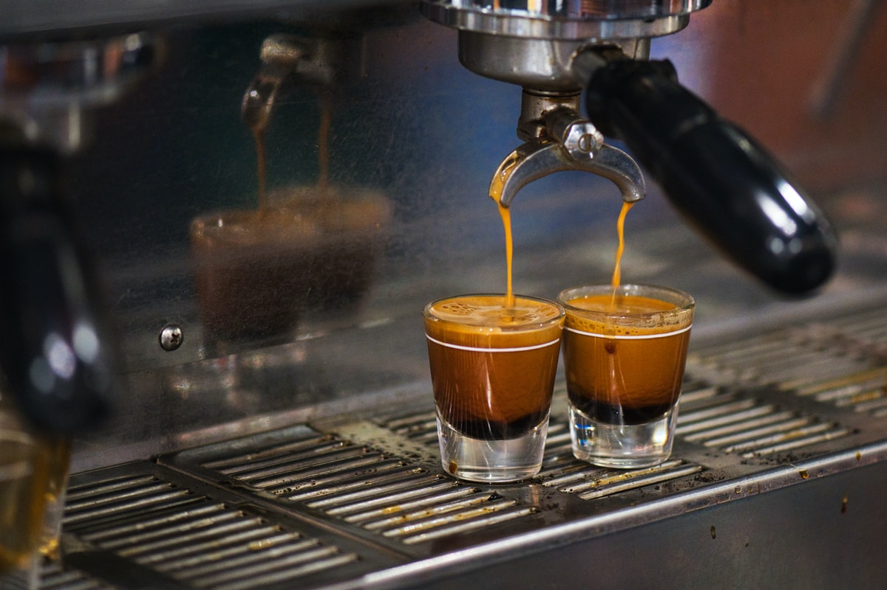
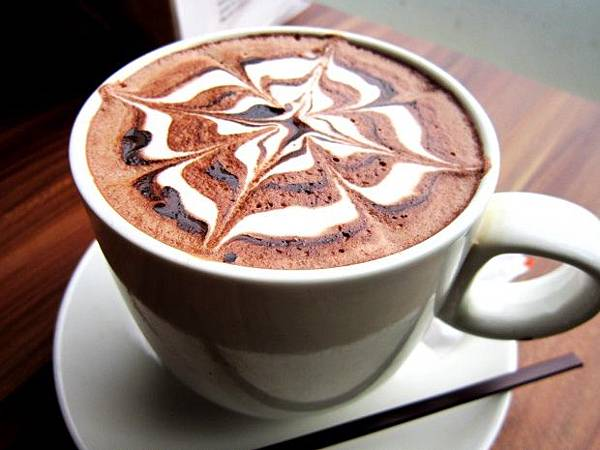
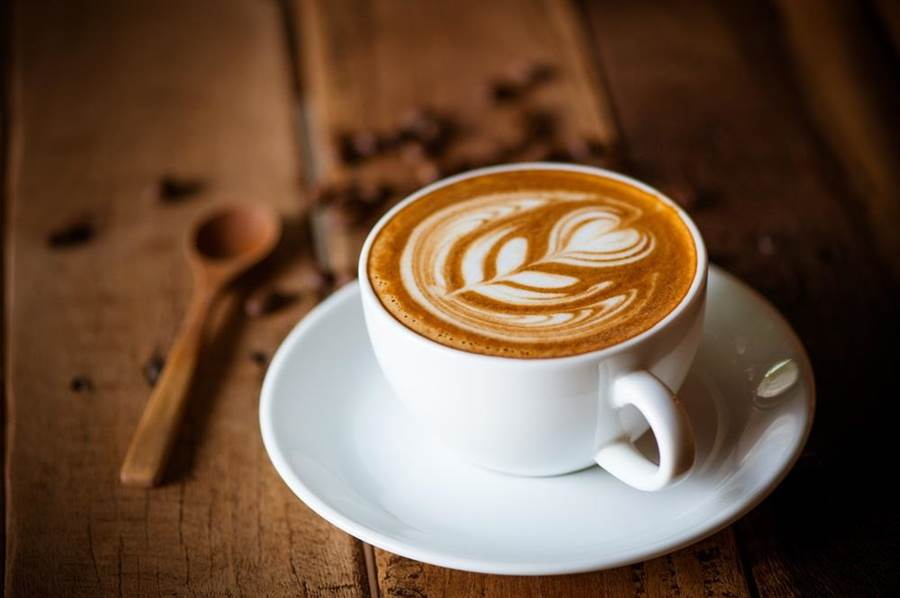
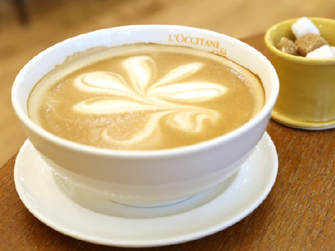

你喜歡何種調製的咖啡☕
點什麼樣的咖啡才是自己喜歡的口味？

A.
卡布奇諾 Cappiccino
咖啡中摻入甜美牛奶香

B.
美式咖啡 Americano
方便又快速的國民大眾咖啡

C.
濃縮咖啡Espresso
真實呈現咖啡精髓

✒因為是濃縮咖啡，所以咖啡的各種味道也會被放大，表現出 咖啡的精髓。而以Espresso為基底則又衍生出各種花式咖啡，讓人為之著迷。
D.
瑪琪雅朵Macchiato
Espresso添上一抹輕柔白雲

E.
摩卡咖啡 Caffe Mocha
有巧克力風味相織的濃郁咖啡

✒一般在卡布奇諾上加上巧克力醬的義式咖啡稱為摩卡奇諾，而拿鐵和巧克力的組成則稱為摩卡拿鐵囉。
F.
拿鐵咖啡Cafe Latte
濃縮咖啡與牛奶的巧妙平衡

✒拿鐵咖啡是指濃縮咖啡、熱牛奶與奶泡的比例約為1:2:1，能同時品嚐到濃郁的咖啡香氣和溫柔的綿密牛奶，兩者交融的平衡滋味是拿鐵最吸引人之處。
⭐最後，來介紹
咖啡歐蕾Cafe au Lait
牛奶為主角襯出咖啡配角的香氣

✍咖啡的種類很多，有些名字是指咖啡做法不同，有些則是指咖啡豆的產地不同。
那我們用一張表格來介紹幾種最常見的咖啡。
| 咖啡名稱 | 內容描述 | 名稱由來及特點 | >
| 黑咖啡 Black Coffee |
* 直接用咖啡豆沖煮的咖啡 * 不加牛奶不加糖 |
咖啡生豆靜經過烘焙之後呈現焦黑色, 因此經熱水沖泡完成的成品稱之為黑咖啡 |
| 白咖啡 White Coffee |
* 咖啡沖煮後加入煉乳 * 在美國另指使用輕度烘焙的咖啡豆沖煮的咖啡 |
由加煉乳後跟咖啡原始顏色產生結合而來。 |
| 意式濃縮咖啡 Espresso |
* espresso是1種煮咖啡的方式 * 利用高温高壓衝煮咖啡 |
* 相傳一名意大利工程師為了達到快速煮咖啡,想出了高壓高温的方式,不僅節省了時間,衝煮出的咖啡香氣濃郁
* expresso意大利文意思為"快速" |
| 拿鐵咖啡 Coffee Latte |
* espresso當基底 * 加上兩份以上的牛奶不加奶泡 |
* Latte是意大利語種的牛奶 * Caffe' Latte也就是牛奶咖啡的意思 |
| 卡布奇諾 Cappuccino |
* espresso當基底 * 加入牛奶跟奶泡 * 咖啡跟牛奶奶泡比分為1:1:1 * 可額外加入肉桂香料巧克力粉調味 * 兩份espresso當基底稱之Double |
Cappuccino是意大利咖啡的一種變化，即在偏濃的咖啡上，倒入以蒸汽發泡的牛奶，此時咖啡的顏色就像卡布奇諾教會修士深褐色外衣上覆的頭巾一樣，咖啡因此得名。 |
| 瑪奇朵 Macchiato |
* espresso加上奶泡 | * Macchiato在義大利文是指烙印的意思
* 熟悉的焦糖瑪奇朵(Caramel Macchiato)則是在Macchiato上淋上焦糖,代表着甜蜜的印記 |
| 摩卡咖啡 Coffee Mocha |
* 也門咖啡
* 另指意式花式咖啡(espresso加上牛奶及巧克力) |
*17世紀第一批銷售到歐洲的葉門咖啡是來自也門的摩卡港 * 也門咖啡是透過深度烘焙, 帶了巧克力般的苦甜味,因此今日加入巧克力醬的義式咖啡也稱之為摩卡咖啡 |
| 美式咖啡 American Coffee |
espresso加入熱水 | 名稱來自於在歐洲的美國軍人將熱水加入espresso的習慣 |
| 愛爾蘭咖啡 Irish Coffee |
* 熱咖啡加上威士忌 * 頂端放上奶油 |
浪漫傳説: 一段關於愛爾蘭都柏林機場裏一位酒保迷戀空姐的愛情故事 |
| 維也納咖啡 Viennese (德文:Melange) |
滾燙的熱咖啡加上冰涼鮮奶油和巧克力，並撒上糖制的七彩米 | * 浪漫傳説: 奧地利馬車伕愛因舒伯納發明,表達丈夫對妻子的思念
* 維也納咖啡源於奧地利，是咖啡、鮮奶油和糖的組合。喝的時候上面是濃香的冰奶油，中間有純正的咖啡，喝到底下，甜蜜的糖漿入口，可以享受充分三段式的變化口味 |
| 越南咖啡 Vietnamese Coffee |
* 咖啡粉盛在金屬特殊的炮製過濾器，倒入滾水，讓咖啡一滴一滴流到杯子裡
* 等咖啡滴完，隨每個人口味加糖或者加點煉奶攪拌 |
* 越南式沖泡方法。
* 越南咖啡豆之最大特色是以特殊奶油烘焙而成,故會有濃郁的熱帶咖啡包裹着濃濃的奶油香味 |
| 曼特寧咖啡 Mandeling Coffee |
* 別稱蘇門答臘咖啡
* 風味非常濃郁，香、苦、醇厚，帶有少許的甜味。 |
曼特寧並非產區名、地名、港口名、也非咖啡品種的名，而是印尼曼代寧mandheling民族的音誤 |